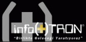

infoTRON A.Þ.
(27-11-2007) |
infoTRON Ürün Geliþtirme Semineri - 3 > Hýzlý Prototipleme ve Hýzlý Ýmalat Teknolojileri, 30 Kasým 2007 Cuma, Ýstanbul Sürmeli Oteli... |
infoTRON Ürün Geliþtirme Seminer serisinin üçüncüsü "Hýzlý Prototipleme ve Hýzlý Ýmalat Teknolojileri" semineri 30 Kasým 2007, Cuma günü Ýstanbul Sürmeli Oteli'nde gerçekleþecektir.
Katýlým için kayýt zorunlu olup, söz konusu seminere iliþkin detaylara ve kayýt formuna web sitemizden ulaþabilirsiniz; www.infotron.com.tr
Üçüncü seminer için son kayýt tarihi: 28 Kasým 2007, Perþembe
Kapsam:
"Hýzlý Prototipleme ve Hýzlý Ýmalat Teknolojileri" seminerimizde sizlere hýzlý prototipleme ve hýzlý imalat çözümlerinin ürün geliþtirme süreçlerine olan katkýsýný, þirketlerin baþarýsý üzerindeki etkilerini, bu teknolojilerdeki en son geliþmeleri ve Ýmalat, Otomotiv ve Beyaz Eþya Sektörleri baþta olmak üzere, tüm sektörlere yönelik uygulamalarý içeren, kapsamlý bilgiler verilecektir. Geleneksel yöntemler ile çözemediðiniz problemlerinize yönelik olarak, pratik teknik detaylar sunulacaktýr. Misafirlerimizin de aktif katýlýmlarýyla, "Hýzlý Prototipleme ve Hýzlý Ýmalat" konularýnda karþýlýklý bilgi paylaþýmýna yönelik bir ortam hedeflenmektedir.
Amaç:
Hýzlý prototipleme ve hýzlý imalat teknolojileri dünyada endüstriyel anlamda, yaklaþýk 10 yýldýr önemini artýrarak yaygýnlaþmaktadýr. Türkiye'de bu teknolojilerin ürün geliþtirme sürecine katkýlarýnýn daha iyi anlaþýlabilmesi için seminerlerimizin üçüncüsünü "Hýzlý Prototipleme ve Hýzlý Ýmalat Teknolojileri" konularýna ayýrdýk. Hýzla geliþen teknolojide bilgi paylaþýmýný birinci aðýzdan saðlamak, uygulamalarýný sergilemek ve katma deðeri yüksek ürünler geliþtirme sürecinde, sizlere yeni ufuklar açmak bu seminerimizin ana hedefleri arasýnda yer almaktadýr.
Ýlgili Sektörler:
* Otomotiv
* Beyaz Eþya Üreticileri
* Savunma Sanayii
* Havacýlýk
* Genel Makine Üretimi
* Tasarým
* Ýlgili Yan Sanayi
* Akademik Kurumlar
Kimler Katýlmalý?
* Ýþverenler,
* Akademisyenler,
* Mühendisler,
* Araþtýrmacýlar,
* Doktora, Yüksek Lisans ve Lisans Öðrencileri,
* Proje Koordinatörleri,
* Teknik Müdürler...
Konuþmacýlar:
* Ayhan Keleþ, TTGV
* Arifhan Yarkýn, infoTRON
* Tim Heller, Stratasys
* Bora Çýraçý, Eczacýbaþý
* Göktuð Tüfekçi, Viko
* Timuçin Bayram, Uzel
* Stefan Ritt, MCP HEK
* Ýsmail Durgun, Fiat Tofaþ
* Oðuzhan Kudu, +90
* Levent Tümay, Hunstman
* Özcan Menekþe, infoTRON
* Tolga Arslan, Ernamaþ
SEMÝNER PROGRAMI:
09:00 09:30 Kayýt
09:30 09:45 Açýlýþ
09:45 10:00 Ar-Ge Destekleri - Ayhan Keleþ, TTGV
10:00 10:15 Hýzlý Ýmalat Teknolojileri - Arifhan Yarkýn, infoTRON
10:15 10:45 3D Printing - Tim Heller Stratasys
10:45 11:15 Kahve Molasý
11:15 11:30 Sanayide Uygulama Sunumu - Bora Çýracý, Eczacýbaþý Yapý Gereçleri
11:30 12:00 Direct Digital Manufacturing - Tim Heller, Stratasys
12:00 12:15 Sanayide Uygulama Sunumu - Göktuð Tüfekçi, Viko A.Þ.
12:15 12:45 Sanayide Uygulama Sunumu - Timuçin Bayram, Uzel
12:45 13:30 Öðle Yemeði
13:30 14:00 MCP HEK Hýzlý Ýmalat Teknolojileri Çözümleri - Stefan Ritt, MCP HEK
14:00 14:30 Sanayide Uygulama Sunumu - Ýsmail Durgun, FIAT TOFAÞ
14:30 15:00 Hýzlý Ýmalat Uygulamasý Baþarý Öyküleri - Oðuzhan Kudu, +90
15:00 15:30 Kahve Molasý
15:30 16:00 Huntsman Advanced Materials Çözümleri - Levent Tümay, Huntsman
16:00 16:30 1/1 Görsel Mock-Up - Özcan Menekþe, infoTRON
16:30 17:00 Sanayide Uygulama sunumu - Tolga Arslan, Ernamaþ
17:00 17:30 Sorular ve Cevaplar
LCV:
Leyla Besli
leyla.besli@infotron.com.tr
Satýþ Destek Sorumlusu
Otel Bilgileri:
Sürmeli Otel
Prof. Dr. Bülent Tarcan Sokak No:3 34349 Gayrettepe Ýstanbul
Tel: (212) 272 11 61
Not: infoTRON, programda deðiþiklik yapma hakkýný saklý tutmaktadýr.
infoTRON Elektronik ve Bilgisayar Sistemleri Üretim ve Tic. A.Þ.
Fahrettin Kerim Gökay Cad. No:27/1
34662 Altunizade Ýstanbul
Tel: (216) 651 09 55
Faks: (216) 651 09 54
www.infotron.com.tr
|